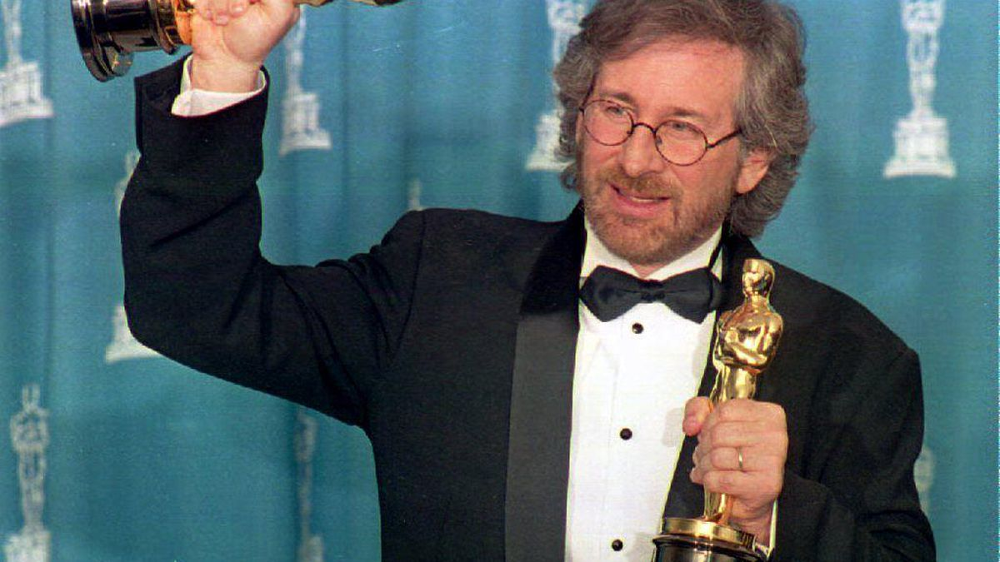

Steven Spielberg - The King of Entertainment

Steven Spielberg wins Academy Awards Best Picture and Director in 1994 for Schindler's List
About Steven Spielberg
Enter Information about Steven!!! Click Me
Steven Spielberg wins Academy Awards Best Picture and Director in 1994 for Schindler's List
Enter Information about Steven!!! Click Me